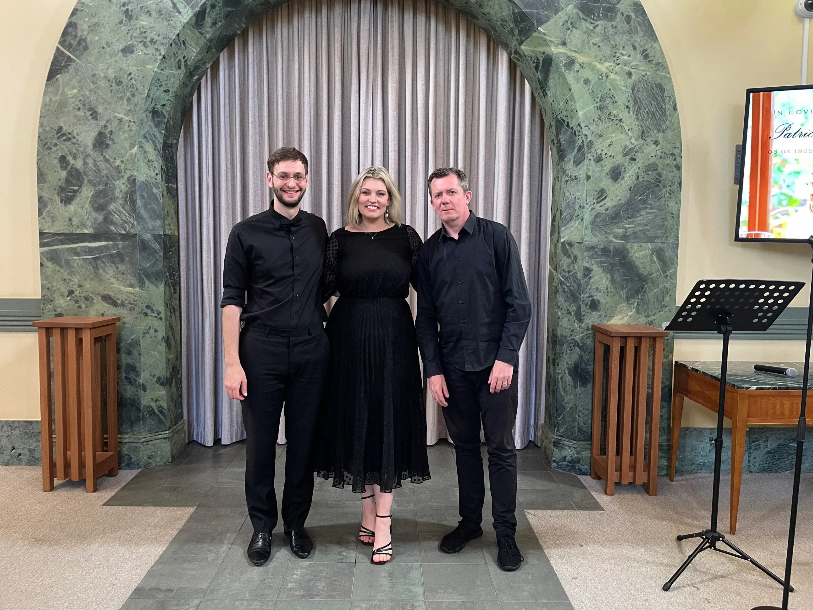

Funeral Songs
Natalie is more than happy to organise performances of requested songs that are not on the below list.
Secular Songs
- After All These Years (Foster & Allen)
- Amarilli, mia bella (Caccnin)
- Angel (Sarah McLachlan)
- Angels (Robbie Williams)
- Because You Loved Me (Celine Dion)
- Bridge Over Troubled Water (Simon and Garfunkel)
- Candle In The Wind (Elton John)
- Close To You (Carpenters)
- Danny Boy (Traditional)
- Dream a little Dream of Me (Doris Day)
- Easy (Faith No More)
- Goin’ Home (Dvorak)
- Everything I Do (Bryan Adams)
- Fields of Gold (Eva Cassidy)
- From a Distance (Bette Midler)
- Goodbye is the Saddest Word (Celine Dion)
- Heaven (DJ Sammy & Yanou – Candlelight Mix)
- How Long Will l Love You (Ellie Goulding)
- Immortality (Celine Dion)
- Jesu, Joy of Man’s Desiring
- Laudate Dominum (Mozart)
- The White Rose of Athens (Nana Mourskouri)
- The Last Rose of Summer (Trad. Irish)
- Mamma (Jerry Vale)
- Meet Me in the Middle of the Air (Paul Kelly)
- My Way (Frank Sinatra)
- Per la gloria d’adorarvi (Bononcini)
- Photograh (Ed Sheeren)
- Shine Your Light (Robertson/Ladder 49)
- Sweeter than Roses
- The First Time Ever I Saw Your Face (MacColl)
- Tears In Heaven (Eric Clapton)
- That’s Someone You Never Forget (Elvis)
- The Prayer (Anthony Callea/Celine Dion/Andrea Bocelli
- The Rose (Bette Midler)
- The Wind Beneath My Wings – Bette Midler
- There You’ll Be – Faith Hill
- The Water is Wide (Traditional)
- The Way We Were (Barbra Streisand)
- The White Cliffs of Dover (Vera Lynn)
- The Wind Beneath my Wings (Bette Midler)
- Time To Say Goodbye (Andrea Bocelli & Sarah Brightman)
- To Where You Are – Josh Groban
- Unforgettable (Nat King Cole & Natalie Cole)
- What a Wonderful World
- When I Grow To Old To Dream (John McDermott)
- Wind Beneath My Wings (Bette Middler)
- You are My Sunshine
- You Raise Me Up (Josh Groban)
- You’ll Never Walk Alone (Gerry & The Pacemakers)
Church Hymns
- Abide with Me
- Agnus Dei (Barber)
- Amazing Grace
- A New Commandment
- An Irish Blessing
- Ave Maria (Schubert or Gonoud/Bach)
- Ave Verum
- Be Not Afraid
- Be Still My Soul
- Caro mio ben (Giordani)
- Christ Be Our Light
- City of God
- Come as You Are
- Eagles Wings (Anderson)
- Easter Hallelujah
- Glory and Praise to our God (Schutte)
- Guide Me O Thou Great Jehovah
- Hail Mary – Gentle Woman (Landry)
- Here I am Lord (Schutte)
- How Great Thou Art
- I Am the Bread of Life
- I Found a Treasure
- I Need Thee Every Hour
- Isaiah 49 (Landry)
- I Vow to Thee My Country
- Jesus Remember Me
- Just As I Am
- May the Road Rise to Meet You
- Morning Has Broken (Cat Stevens)
- Nearer My God to Thee
- Nothing is Lost on the Breath of God (Gibson)
- Ode To Joy
- One Bread One Body
- On Eagles Wings (Joncas)
- Our Supper Invitation
- Panis Angelicus
- Pie Jesu (Webber)
- Pie Jesu (Faure)
- Praise My Soul the King of Heaven
- Soul of My Saviour
- Strong and Constant
- Sweet Sacrament Divine
- Ten Thousand Reasons
- The Day You Gave Us Lord Has Ended
- The Lord is My Shepherd (Boniwell, Irvine or Goodall)
- The Old Rugged Cross
- The Skye Boat Song
- The White Rose of Athens
- What a Beautiful Name (Hillsong)
- You are Mine